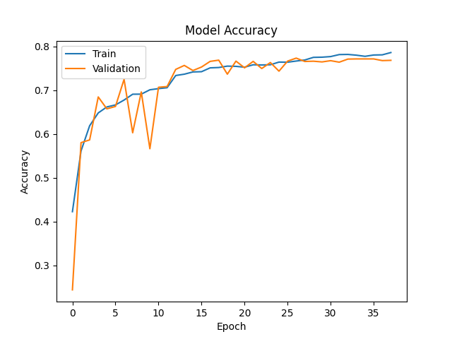
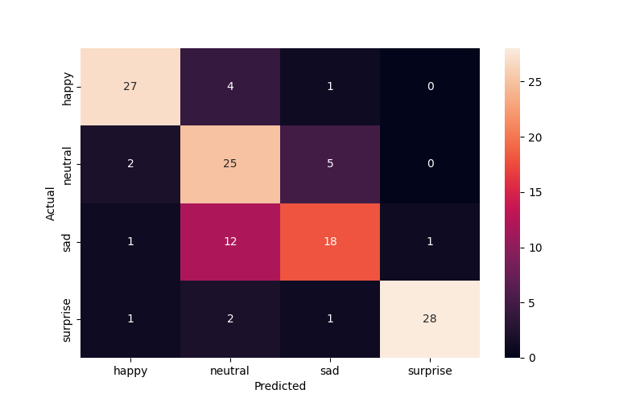
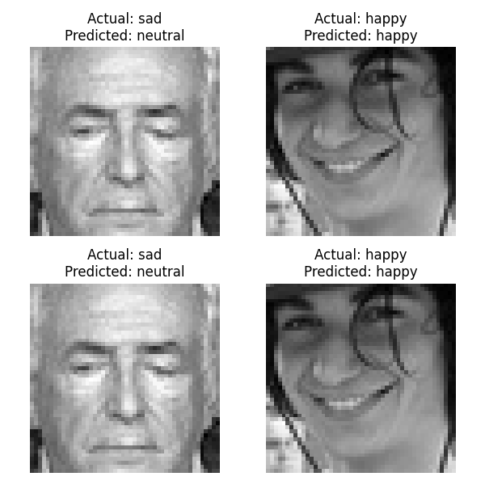

        <html>
        <head><title>Model Summary - 2024-04-10 14:51:52</title></head>
        <body>
        <h1>Model Configuration</h1>
        <pre>model:
  compile:
    learning_rate: 0.001
    optimizer: Adam
    optimizer_name: adam
  data:
    color_layers: 1
    color_mode: grayscale
    img_height: 48
    img_width: 48
    use_data_loaders: true
  layers:
  - filters: 64
    kernel_size:
    - 2
    - 2
    padding: same
    type: Conv2D
  - type: BatchNormalization
  - alpha: 0.1
    type: LeakyReLU
  - pool_size:
    - 2
    - 2
    type: MaxPooling2D
  - filters: 128
    kernel_size:
    - 2
    - 2
    padding: same
    type: Conv2D
  - type: BatchNormalization
  - alpha: 0.1
    type: LeakyReLU
  - pool_size:
    - 2
    - 2
    type: MaxPooling2D
  - filters: 256
    kernel_size:
    - 2
    - 2
    padding: same
    type: Conv2D
  - type: BatchNormalization
  - alpha: 0.1
    type: LeakyReLU
  - pool_size:
    - 2
    - 2
    type: MaxPooling2D
  - filters: 512
    kernel_size:
    - 2
    - 2
    padding: same
    type: Conv2D
  - type: BatchNormalization
  - alpha: 0.1
    type: LeakyReLU
  - pool_size:
    - 2
    - 2
    type: MaxPooling2D
  - filters: 128
    kernel_size:
    - 2
    - 2
    padding: same
    type: Conv2D
  - type: BatchNormalization
  - alpha: 0.1
    type: LeakyReLU
  - pool_size:
    - 2
    - 2
    type: MaxPooling2D
  - type: Flatten
  - activation: relu
    type: Dense
    units: 512
  - activation: relu
    type: Dense
    units: 128
  - type: Dense
    units: 64
  - type: BatchNormalization
  - type: ReLU
  - activation: softmax
    type: Dense
    units: 4
  train:
    batch_size: 64
    epochs: 40
    patience: 7
</pre>
        <h1>Model Summary</h1>
        <pre>Model: "sequential"
┏━━━━━━━━━━━━━━━━━━━━━━━━━━━━━━━━━━━━━━┳━━━━━━━━━━━━━━━━━━━━━━━━━━━━━┳━━━━━━━━━━━━━━━━━┓
┃ Layer (type)                         ┃ Output Shape                ┃         Param # ┃
┡━━━━━━━━━━━━━━━━━━━━━━━━━━━━━━━━━━━━━━╇━━━━━━━━━━━━━━━━━━━━━━━━━━━━━╇━━━━━━━━━━━━━━━━━┩
│ conv2d (Conv2D)                      │ (None, 48, 48, 64)          │             320 │
├──────────────────────────────────────┼─────────────────────────────┼─────────────────┤
│ batch_normalization                  │ (None, 48, 48, 64)          │             256 │
│ (BatchNormalization)                 │                             │                 │
├──────────────────────────────────────┼─────────────────────────────┼─────────────────┤
│ leaky_re_lu (LeakyReLU)              │ (None, 48, 48, 64)          │               0 │
├──────────────────────────────────────┼─────────────────────────────┼─────────────────┤
│ max_pooling2d (MaxPooling2D)         │ (None, 24, 24, 64)          │               0 │
├──────────────────────────────────────┼─────────────────────────────┼─────────────────┤
│ conv2d_1 (Conv2D)                    │ (None, 24, 24, 128)         │          32,896 │
├──────────────────────────────────────┼─────────────────────────────┼─────────────────┤
│ batch_normalization_1                │ (None, 24, 24, 128)         │             512 │
│ (BatchNormalization)                 │                             │                 │
├──────────────────────────────────────┼─────────────────────────────┼─────────────────┤
│ leaky_re_lu_1 (LeakyReLU)            │ (None, 24, 24, 128)         │               0 │
├──────────────────────────────────────┼─────────────────────────────┼─────────────────┤
│ max_pooling2d_1 (MaxPooling2D)       │ (None, 12, 12, 128)         │               0 │
├──────────────────────────────────────┼─────────────────────────────┼─────────────────┤
│ conv2d_2 (Conv2D)                    │ (None, 12, 12, 256)         │         131,328 │
├──────────────────────────────────────┼─────────────────────────────┼─────────────────┤
│ batch_normalization_2                │ (None, 12, 12, 256)         │           1,024 │
│ (BatchNormalization)                 │                             │                 │
├──────────────────────────────────────┼─────────────────────────────┼─────────────────┤
│ leaky_re_lu_2 (LeakyReLU)            │ (None, 12, 12, 256)         │               0 │
├──────────────────────────────────────┼─────────────────────────────┼─────────────────┤
│ max_pooling2d_2 (MaxPooling2D)       │ (None, 6, 6, 256)           │               0 │
├──────────────────────────────────────┼─────────────────────────────┼─────────────────┤
│ conv2d_3 (Conv2D)                    │ (None, 6, 6, 512)           │         524,800 │
├──────────────────────────────────────┼─────────────────────────────┼─────────────────┤
│ batch_normalization_3                │ (None, 6, 6, 512)           │           2,048 │
│ (BatchNormalization)                 │                             │                 │
├──────────────────────────────────────┼─────────────────────────────┼─────────────────┤
│ leaky_re_lu_3 (LeakyReLU)            │ (None, 6, 6, 512)           │               0 │
├──────────────────────────────────────┼─────────────────────────────┼─────────────────┤
│ max_pooling2d_3 (MaxPooling2D)       │ (None, 3, 3, 512)           │               0 │
├──────────────────────────────────────┼─────────────────────────────┼─────────────────┤
│ conv2d_4 (Conv2D)                    │ (None, 3, 3, 128)           │         262,272 │
├──────────────────────────────────────┼─────────────────────────────┼─────────────────┤
│ batch_normalization_4                │ (None, 3, 3, 128)           │             512 │
│ (BatchNormalization)                 │                             │                 │
├──────────────────────────────────────┼─────────────────────────────┼─────────────────┤
│ leaky_re_lu_4 (LeakyReLU)            │ (None, 3, 3, 128)           │               0 │
├──────────────────────────────────────┼─────────────────────────────┼─────────────────┤
│ max_pooling2d_4 (MaxPooling2D)       │ (None, 1, 1, 128)           │               0 │
├──────────────────────────────────────┼─────────────────────────────┼─────────────────┤
│ flatten (Flatten)                    │ (None, 128)                 │               0 │
├──────────────────────────────────────┼─────────────────────────────┼─────────────────┤
│ dense (Dense)                        │ (None, 512)                 │          66,048 │
├──────────────────────────────────────┼─────────────────────────────┼─────────────────┤
│ dense_1 (Dense)                      │ (None, 128)                 │          65,664 │
├──────────────────────────────────────┼─────────────────────────────┼─────────────────┤
│ dense_2 (Dense)                      │ (None, 64)                  │           8,256 │
├──────────────────────────────────────┼─────────────────────────────┼─────────────────┤
│ batch_normalization_5                │ (None, 64)                  │             256 │
│ (BatchNormalization)                 │                             │                 │
├──────────────────────────────────────┼─────────────────────────────┼─────────────────┤
│ re_lu (ReLU)                         │ (None, 64)                  │               0 │
├──────────────────────────────────────┼─────────────────────────────┼─────────────────┤
│ dense_3 (Dense)                      │ (None, 4)                   │             260 │
└──────────────────────────────────────┴─────────────────────────────┴─────────────────┘
 Total params: 1,096,452 (4.18 MB)
 Trainable params: 1,094,148 (4.17 MB)
 Non-trainable params: 2,304 (9.00 KB)
</pre>
        <h2>Test Accuracy</h2>
        <p>
1/2 ━━━━━━━━━━━━━━━━━━━━ 0s 24ms/step - accuracy: 0.8125 - loss: 0.4308
2/2 ━━━━━━━━━━━━━━━━━━━━ 0s 7ms/step - accuracy: 0.7812 - loss: 0.5005 

1/2 ━━━━━━━━━━━━━━━━━━━━ 0s 396ms/step
2/2 ━━━━━━━━━━━━━━━━━━━━ 0s 2ms/step  
</p>
        <h2>Accuracy Plot</h2>
        
        <h2>Classification Report</h2>
        <pre>              precision    recall  f1-score   support

       happy       0.87      0.84      0.86        32
     neutral       0.58      0.78      0.67        32
         sad       0.72      0.56      0.63        32
    surprise       0.97      0.88      0.92        32

    accuracy                           0.77       128
   macro avg       0.78      0.77      0.77       128
weighted avg       0.78      0.77      0.77       128

</pre>
        <h2>History</h2>
        <pre>Epoch 1: accuracy: 0.4227, loss: 1.2427, val_accuracy: 0.2443, val_loss: 1.4541, learning_rate: 0.0010
Epoch 2: accuracy: 0.5613, loss: 1.0098, val_accuracy: 0.5803, val_loss: 1.1282, learning_rate: 0.0010
Epoch 3: accuracy: 0.6188, loss: 0.9034, val_accuracy: 0.5865, val_loss: 0.9982, learning_rate: 0.0010
Epoch 4: accuracy: 0.6481, loss: 0.8406, val_accuracy: 0.6845, val_loss: 0.7749, learning_rate: 0.0010
Epoch 5: accuracy: 0.6617, loss: 0.8095, val_accuracy: 0.6574, val_loss: 0.8181, learning_rate: 0.0010
Epoch 6: accuracy: 0.6664, loss: 0.7910, val_accuracy: 0.6628, val_loss: 0.8485, learning_rate: 0.0010
Epoch 7: accuracy: 0.6775, loss: 0.7771, val_accuracy: 0.7247, val_loss: 0.7040, learning_rate: 0.0010
Epoch 8: accuracy: 0.6908, loss: 0.7445, val_accuracy: 0.6028, val_loss: 0.9454, learning_rate: 0.0010
Epoch 9: accuracy: 0.6910, loss: 0.7440, val_accuracy: 0.6960, val_loss: 0.7299, learning_rate: 0.0010
Epoch 10: accuracy: 0.7009, loss: 0.7297, val_accuracy: 0.5664, val_loss: 1.0270, learning_rate: 0.0010
Epoch 11: accuracy: 0.7036, loss: 0.7203, val_accuracy: 0.7067, val_loss: 0.7156, learning_rate: 0.0010
Epoch 12: accuracy: 0.7056, loss: 0.7160, val_accuracy: 0.7083, val_loss: 0.7112, learning_rate: 0.0010
Epoch 13: accuracy: 0.7335, loss: 0.6523, val_accuracy: 0.7474, val_loss: 0.6263, learning_rate: 0.0002
Epoch 14: accuracy: 0.7365, loss: 0.6442, val_accuracy: 0.7565, val_loss: 0.6026, learning_rate: 0.0002
Epoch 15: accuracy: 0.7416, loss: 0.6363, val_accuracy: 0.7448, val_loss: 0.6454, learning_rate: 0.0002
Epoch 16: accuracy: 0.7422, loss: 0.6279, val_accuracy: 0.7529, val_loss: 0.6168, learning_rate: 0.0002
Epoch 17: accuracy: 0.7509, loss: 0.6181, val_accuracy: 0.7657, val_loss: 0.5943, learning_rate: 0.0002
Epoch 18: accuracy: 0.7517, loss: 0.6149, val_accuracy: 0.7685, val_loss: 0.5884, learning_rate: 0.0002
Epoch 19: accuracy: 0.7549, loss: 0.6067, val_accuracy: 0.7366, val_loss: 0.6530, learning_rate: 0.0002
Epoch 20: accuracy: 0.7544, loss: 0.6130, val_accuracy: 0.7663, val_loss: 0.5890, learning_rate: 0.0002
Epoch 21: accuracy: 0.7525, loss: 0.6112, val_accuracy: 0.7511, val_loss: 0.6118, learning_rate: 0.0002
Epoch 22: accuracy: 0.7580, loss: 0.5991, val_accuracy: 0.7657, val_loss: 0.5854, learning_rate: 0.0002
Epoch 23: accuracy: 0.7576, loss: 0.5928, val_accuracy: 0.7494, val_loss: 0.6415, learning_rate: 0.0002
Epoch 24: accuracy: 0.7580, loss: 0.6074, val_accuracy: 0.7631, val_loss: 0.5943, learning_rate: 0.0002
Epoch 25: accuracy: 0.7641, loss: 0.5851, val_accuracy: 0.7434, val_loss: 0.6255, learning_rate: 0.0002
Epoch 26: accuracy: 0.7638, loss: 0.5828, val_accuracy: 0.7663, val_loss: 0.5886, learning_rate: 0.0002
Epoch 27: accuracy: 0.7665, loss: 0.5811, val_accuracy: 0.7732, val_loss: 0.5862, learning_rate: 0.0002
Epoch 28: accuracy: 0.7689, loss: 0.5669, val_accuracy: 0.7655, val_loss: 0.5846, learning_rate: 0.0000
Epoch 29: accuracy: 0.7749, loss: 0.5573, val_accuracy: 0.7661, val_loss: 0.5926, learning_rate: 0.0000
Epoch 30: accuracy: 0.7753, loss: 0.5559, val_accuracy: 0.7645, val_loss: 0.5832, learning_rate: 0.0000
Epoch 31: accuracy: 0.7767, loss: 0.5487, val_accuracy: 0.7673, val_loss: 0.5732, learning_rate: 0.0000
Epoch 32: accuracy: 0.7813, loss: 0.5538, val_accuracy: 0.7639, val_loss: 0.5891, learning_rate: 0.0000
Epoch 33: accuracy: 0.7816, loss: 0.5463, val_accuracy: 0.7709, val_loss: 0.5758, learning_rate: 0.0000
Epoch 34: accuracy: 0.7799, loss: 0.5465, val_accuracy: 0.7713, val_loss: 0.5748, learning_rate: 0.0000
Epoch 35: accuracy: 0.7773, loss: 0.5477, val_accuracy: 0.7713, val_loss: 0.5741, learning_rate: 0.0000
Epoch 36: accuracy: 0.7803, loss: 0.5414, val_accuracy: 0.7713, val_loss: 0.5739, learning_rate: 0.0000
Epoch 37: accuracy: 0.7807, loss: 0.5415, val_accuracy: 0.7675, val_loss: 0.5813, learning_rate: 0.0000
Epoch 38: accuracy: 0.7859, loss: 0.5449, val_accuracy: 0.7681, val_loss: 0.5792, learning_rate: 0.0000
</pre>
        <h2>Confusion Matrix</h2>
        
        <h2>Predicted Images</h2>
        
        </body>
        </html>
        